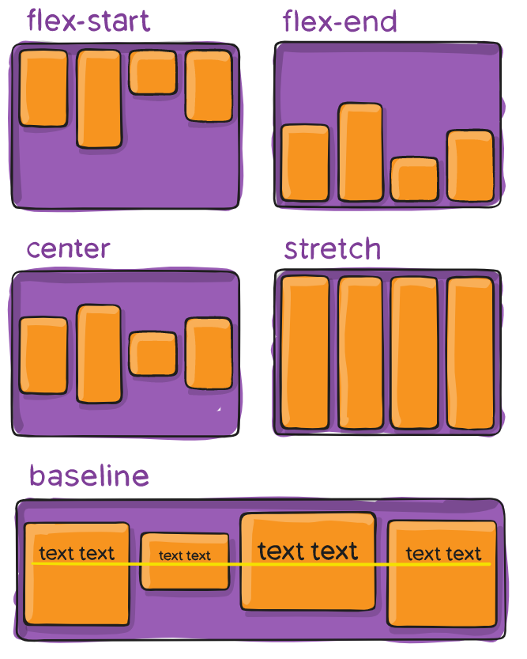
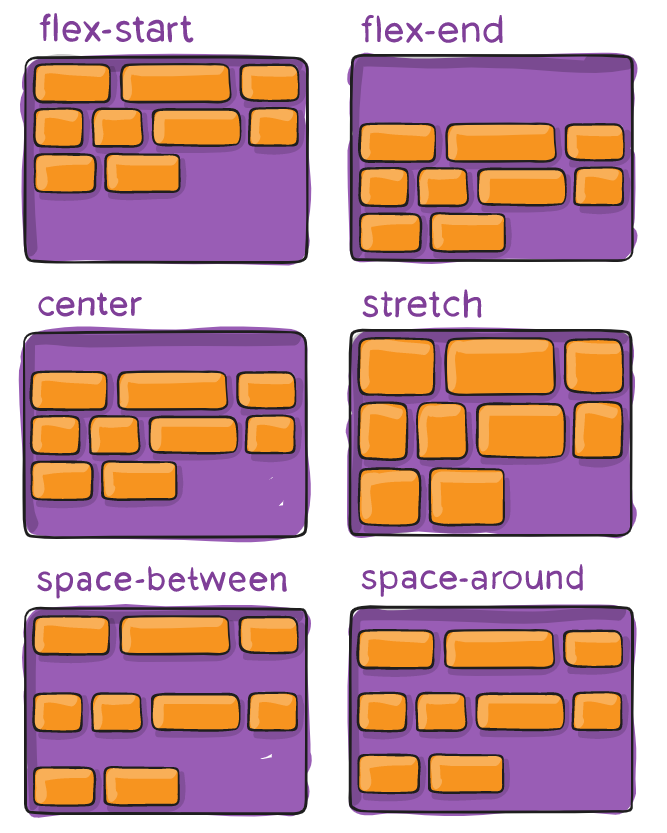
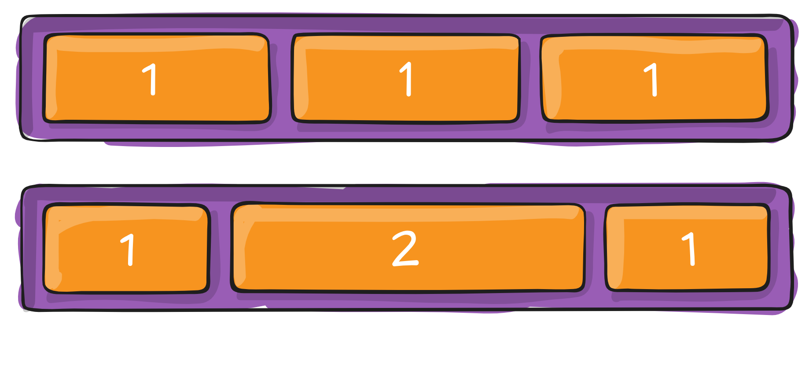
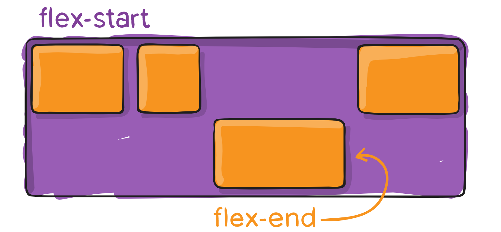

ALIGN-ÍTEMS
Imagen 4
Establece el comportamiento estándar de cómo flex ítems están alineados según el eje transversal (cross axis). En cierto modo, funciona de manera similar al justify-content, pero en el eje transversal (perpendicular al eje principal). . .flex-container {align-items: stretch | flex-start | flex-end | center | baseline; }
Stretch (estándar)
estira los ítems para llenar el contenedor, respetando el min-width/max-width)
Flex-start/start/self-start:
ítems se posicionan al inicio del eje transversal. La diferencia entre ellos es sutil y se refiere a las reglas de flex-direction o writing-mode.
center:
ítems se centran en el eje transversal.
baseline:
ítems se alinean de acuerdo con sus baselines.
Los modificadores safe y unsafe se puede usar junto con todas estas palabras clave (por favor verifique el soporte de cada navegador) y sirven para evitar cualquier alineación de elementos que haga con que el contenido sea inaccesible (por ejemplo, fuera de la pantalla)
ALIGN-CONTENT
Imagen 5
Organiza las líneas dentro de un flex container cuando hay espacio adicional en el eje transversal, similar a cómo justify-content alinea ítems individuales dentro del eje principal.
flex-container
align-content: flex-start | flex-end | center | space-between | space-around | stretch;
flex-start / start:
ítems alineados con el inicio del contenedor. El valor (con mayor soporte de los navegadores) flex-start se guía por la flex-direction,mientras que start se guía por la dirección del writing-mode.
Flex-end/end:
ítems alineados con el final del contenedor. El valor (con mayor soporte de los navegadores) flex-end se guía por la flex-direction, mientras que end se guía por la dirección del writing-mode.
center:
ítems centrados en el contenedor.
space-between:
ítems distribuidos uniformemente; la primera línea al inicio del contenedor y la última línea al final del contenedor.
space-around:
ítems distribuidos uniformemente con el mismo espaciamiento entre cada línea.
space-evenly:
elementos distribuidos uniformemente con el mismo espaciamiento entre ellos
stretch (estándar):
ítems en cada línea se estiran para ocupar el espacio remanente entre ellas.
FLEX-GROW
Imagen 6
Define la habilidad de un flex ítem de crecer, según el caso. El valor de esta propiedad es un valor numérico sin indicación de unidad, que se utiliza para calcular la
proporción. Este valor dicta la cantidad de espacio disponible en el contenedor que ocupará el ítem.
Si todos los ítems tienen flex-grow establecido en 1, el espacio remanente en el contenedor se distribuirá de manera uniforme entre todos. Si uno de los ítems tiene el valor 2, ocupará el doble de espacio en el contenedor que los demás (o al menos
intentará hacerlo).
.flex-item {flex-grow:
flex-shrink
Establece la habilidad de un flex ítem para contraerse, según el caso. .flex-item { flex-shrink:
flex-basis
Establece el tamaño estándar de un elemento antes de que se distribuya el espacio remanente del contenedor. Puede ser un largo (por ejemplo, 20%, 5rem, etc.) o una palabra clave. La palabra clave auto significa "observe mis propiedades de altura o ancho" (lo que era hecho por la palabra clave t main-size, que fue depreciada). La palabra clave content significa "establezca el tamaño según el contenido interno del ítem"; esta palabra clave aún no tiene mucho soporte, por lo que no es fácil de probar,al igual que sus relacionadas: max-content, min-content y fit-content. .flex-item {flex-basis: flex-basis: | auto; */\* el valor estándar es auto \*/* } Con el valor 0, el espacio adicional alrededor del contenido no se considera. Con el valor de auto, el espacio adicional se distribuye con base en el valor de flex-grox del ítem.
flex
Esta es la propiedad shorthand para flex-grow, flex-shrink y flex-basis, combinadas. El segundo y tercer parámetros (flex-shrink y flex-basis) son opcionales. El estándar es 0 1 auto, pero si lo defines con un solo número, es equivalente a 0 1. .item {flex: none | [ <'flex-grow'> <'flex-shrink'>? || <'flex-basis'> ] }
align-self
Imagen 7
Permite que la alineación estándar (o lo que esté definido por align-items) se sobrescriba para ítems individuales